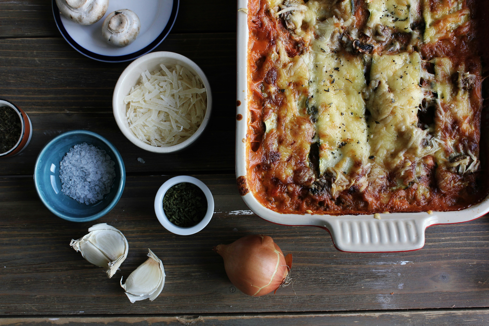
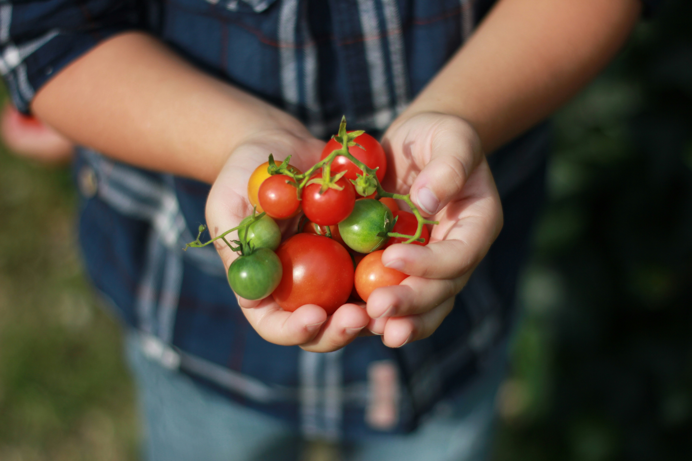

Lasagna alla Bolognese

La lasaña alla bolognese es un icono de la cocina italiana que narra siglos de tradición en cada capa. Originaria de la región de Emilia-Romaña, este plato nació como banquete de celebración, donde las finas láminas de pasta casera – elaboradas con harina de huevo y estiradas hasta quedar translúcidas – se entrelazan con un ragú de carne cocinado a fuego lento durante horas. La receta auténtica, protegida por la Academia Italiana de la Cocina, exige un equilibrio preciso entre el ragú boloñés (carne de res y cerdo con sofrito de zanahoria, apio y vino tinto), la sedosa bechamel y el parmesano Reggiano curado, que al gratinarse crea una corteza dorada.
El secreto está en la paciencia: el ragú debe cocerse hasta reducir sus jugos a una textura sedosa, mientras las láminas de pasta, previamente blanqueadas, absorben los sabores sin perder su firmeza. En el montaje, cada capa se unta generosamente con bechamel – una salsa blanca de mantequilla dorada, leche entera y nuez moscada – que actúa como pegamento entre la pasta y el ragú. El horno, precalentado a 180°C, transforma estos elementos en una sinfonía de texturas: la superficie crujiente contrasta con el interior cremoso, donde los sabores se han fundido en armonía.
Al servirla, se deja reposar unos minutos para que las capas se asienten. Tradicionalmente se acompaña con una ensalada de hojas amargas (rúcula o radicchio) para cortar la riqueza del plato. Un chorrito de aceite de oliva virgen extra y unas hojas de albahaca fresca añaden el toque final. Más que un simple plato de pasta, la lasaña boloñesa es un viaje gastronómico a los fogones de la nonna italiana, donde el tiempo y la técnica se conjugan para crear grandeza con humildes ingredientes.
Fotos de nuestros clientes
 